Science Slogans and Smiles
For the hundreds of thousands of people who attended Marches for Science in 600 cities around the globe the goal was serious: Promote support for science and for evidence-based policy. Many of the signs, however, made their point playfully with wit, plays on words, and yes, some unapologetically nerdy humor.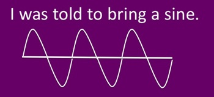
Science. It's like magic, but real.
An opinion without pi is an onion.
What do we want? Science! When do we want it? After peer review.
(Einstein) Science cuts make me relatively angry.
Trekkies came out in force...
Invest in Starfleet.
Engage in science not alternative facts.
Less wars. More Trek. Fund NASA.
Trust Data not Lore.
Mr. Spock says your logic is seriously flawed. Cut emissions not budgets.
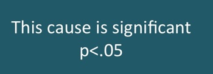
...Along with other sci fi fans.
Science. May the facts be with you.
(Alien) Take me to your $200 billion.
At the start of every disaster movie there's a scientist being ignored.
Pooches brought their own signs.
I drool 4 Pavlov.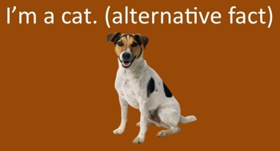
I'm a cat. (Alternative fact)
My genes were artificially selected for cuteness.
Support LABS.
Different disciplines were represented.
Geography
Without geography you're nowhere.
Geology
Science rocks. Don't take it for granite.
Mathematics
Pi is all the irrationality I need.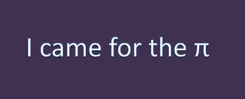
Alternative facts are square root of -1.
Less invasions. More equations.
Protest sine. (adjacent) Protest cosine.
Physics
Only atoms are allowed to just make stuff up.
Don't make me use my laser. March for science.
Chemistry
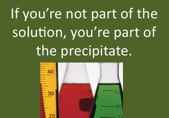If you're not part of the solution, you're part of the precipitate.
W Th F The elements of enraged disbelief.
Biology
More mitosis. Less division.
Pathogens are non-partisan.
If scientists don't resist, bacteria will.
Many marchers were a tad self-deprecating about their activism...
I'd rather be at home writing a peer-reviewed publication.
You know it's bad when this many introverts march.
So severe even the nerds are here.
Don't piss off the nerds.
Society should worry when geeks have to demonstrate.
I can't believe I'm protesting for reality.
Knowing stuff is good. Seriously, why do I even have to march for this?
I'm not good at making signs. Keep me in the lab. No NIH cuts.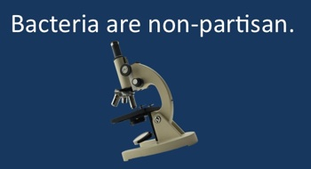
...But proud to be scientists.
People thinking the earth was flat never made it less round.
Science is sexy.
Smart is the new pretty.
Without science there is no twitter! (only twits)
Got plague? Yeah. Me neither. Thank a scientist.
Science. Because you can't just make &#!% up.
Let us now pause for a moment of science.
Portal to Creativity
In the classic children's fantasy novel, The Lion, the Witch and the Wardrobe by C. S. Lewis, an armoire in a spare room serves as a portal into a magical world. The creative worlds of writers and scientists are magical too, and as with Narnia, the portal of entry is fickle.
The creative process involves intense concentration that allows one to descend into a space where ideas can come to life, be gathered, compared, tested, set aside or built upon. Ideas are fast-moving creatures that can slip into and out of view in the blink of an eye. One distraction that yanks a creator out of that magical world can send ideas scurrying for cover, never to be found again.
The era of mobile devices, ubiquitous connectivity and the pinging reminders of the on-line activities of one's real friends and e-friends can be rather more difficult to push aside than the old coats hanging in a wardrobe in an English manor. At times, one manages the Herculean task of disconnecting from it all, only to find that the mind is too noisy to successfully make the leap into the magical world of creativity.
The portal to Narnia was not always open either. At times, the young protagonists of C.S. Lewis entered the wardrobe only to find that all its walls were solid, impenetrable wood. It was the children's frame of mind upon entering the wardrobe that controlled its magic.
Creativity results from harnessing the power of the mind, and it requires a fine balance between self-discipline and complete freedom. Studies of innovation have discovered that a period of intellectual reprieve is most generative if it follows a period of intense focus on a creative problem. Hence the stories of great ideas popping into being in the shower, on the running trail or during quality time with a four-legged friend.
The portal to creativity can thus remain open and allow us to tap the magic of the world on the other side when we least expect it. Nevertheless, as a more recent children's fantasy author, J.K. Rowling, taught us, magic is hard work. Between adventures, Harry, Hermione, Ron and friends had to knuckle down and study. So while we writers may wish for Rita Skeeter's Quick-Quotes Quill, instead we are destined to wear frowns of concentration as we focus on perfecting our craft.
Better than Natural
Nature is an inspiration. Impossible to look up, up, up to the top of a redwood tree and not be overcome with a sense of grandeur. Spend a bit of time watching an ant colony and it is easy to believe that social insects might have a thing or two to teach us about communication and order. Look into the compound eyes of a dragonfly and have the sense that something old and wise is peering into you. 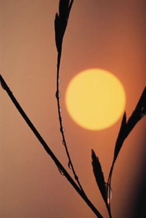
The term "natural historian" brings to mind a lone Renaissance man (or woman) working outdoors, perhaps on the estate of a wealthy benefactor, perhaps in an exotic environment found in the far-flung lands of the colonial empire. Yet, children are keen observers and we all have an inner natural historian whose whispers to escape the concrete jungle and explore the wilderness are often drowned out by the trappings of civilization and its inherent obligations.
Scientists of the modern age still seek to unravel nature's mysteries, and across disciplines they apply the lessons learned to design challenges. The inventor of Velcro was inspired by burrs stuck in his dog's fur. Investigations into the microscopic structure of gecko feet have informed the development of underwater adhesives. Arctic fish that withstand water temperatures below freezing (because salt water freezes at a lower temperature than fresh water) have proteins in their blood that could lead to environmentally friendly antifreeze. Artificial spider silk is something of a holy grail.
As romantic as it is to find scientific inspiration in something as beautiful as the iridescent patterns on the wings of a butterfly, which taught us a thing or two about optics, the latest potential solution from nature is not romantic at all. It is worm spit—not metaphorical worm spit (whatever that would be), literal worm spit. Specifically, the saliva from bloodsucking parasites that latch onto the lining of the gut may provide new therapies for asthma.
The incidence of inflammatory diseases like allergies and asthma has increased in the developed world as sanitation practices have nearly eliminated parasitic worm infections. Clinical trials have shown that infecting people with worms can reduce chronic inflammation. In the saliva hookworms produce when they invade a host, researchers have recently discovered a protein that reduces inflammation in the airways of mice that suffer from a condition similar to asthma. What's more, the protein does not suppress the entire immune system, only certain immune cells involved in the allergic response.
What could be more natural than a hookworm infection? Fortunately, synthesizing the protein of interest or the relevant part of the protein is not out of the question. It is ironic that, while the label "all natural" moves products of all kinds off store shelves, developers of this potential treatment will probably want to sweep that whole "inspired by nature" thing under the rug.
Science Stories: Decrypting Pathogen Tactics
Voices from the frontlines (the laboratory) provide perspectives about the process of science that are missing from reports about the products of science. This post is based on an interview with Partho Ghosh, a professor in the Department of Chemistry and Biochemistry at UC San Diego. Just as photographs of skirmishes on a battlefield can reveal the opponent's defensive strategies, the Ghosh lab uses X-ray crystallography to discover innovative ways of combating microbial invaders. Armed with structural information from the X-ray crystallographic pictures, the lab combines techniques from multiple disciplines to understand the pathogens' highly evolved weaponry and to apply those secrets to curing or preventing the diseases they cause.
What is currently your favorite research project?
We're excited about our study of Group A Streptococcus, the highly infectious bacteria that cause "flesh-eating disease" and toxic shock syndrome. Based on the biology, we've found a clue that may lead to a vaccine. Vaccine development has not been possible previously because the major surface protein on Group A Strep that is targeted by the body's immune system is highly variable in different strains. So the antibody response is only specific against one strain but there are many different strains. We recognized that one particular human protein does bind to lots of Group A Strep strains, and our lab is using fundamental biochemistry, biophysics and bacterial genetics to understand how this happens. We are also collaborating with colleagues in the medical school who use microbiology and immunology models because we don't want to stop at making fundamental discoveries. Ideally, the discovery will progress to the clinic one day.
What is the most intellectually rewarding aspect of the work you do?
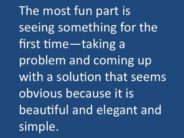The most fun part is seeing something for the first time—taking a problem and coming up with a solution that seems obvious because it is beautiful and elegant and simple. Yet you couldn't have figured it out until you knew where to look. For example, the human protein we discovered that binds to many different Group A Strep strains showed us where to look at these different strains to think about how to make a vaccine that would be effective against many of them. It showed us what we couldn't see—the beauty in the biology and evolution and the patterns that were there all along.
In scientific research, hypotheses drive researchers to make certain types of observations, but the reverse is also true: observations lead to new hypotheses. In your work, what is the balance between these two?
To make big discoveries, observations often drive hypotheses. Big discoveries come from more open-ended questions and often involve risky experiments. If the experiment works, then the research can transition from the open-ended discovery mode to a more closed-ended hypothesis-driven mode where an experiment yields a yes or no response. For example, our lab used an open-ended approach to solve the structure of a protein involved in a hospital-acquired bacterial infection. From the structure, it appears to be a cell-adhesion molecule. Switching to hypothesis-driven mode, we want to know if knocking out the protein prevents cells from sticking, or if knocking it into cells that don't have it causes them to stick. To these questions, either a yes or no response is meaningful. So open-ended mode is useful for fishing for something and hypothesis-driven mode tells you if it's real.
Have your own views of the process of science changed over your research career?
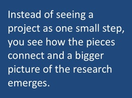The kinds of things you think about start growing. In graduate school, the focus is narrower because you are learning how to do science, including the hypothesis testing and self-criticism that are an essential part of the process. When you are running a lab, you start to look at larger problems. Instead of seeing a project as one small step, you see how the pieces connect and a bigger picture of the research emerges.
What is the best piece of advice you have received about communicating science?
Explain it like you are speaking to a family member. Because our lab is at an interface between rigorous biochemistry and biology, translating from one to the other is a big part of what I do. I've noticed one mistake students often make is that they assume everyone knows more than they do. When someone asks what they are doing, they give a very technical explanation. They need to step back and answer the question: "Why would anyone do this?" The starting place always needs to be an accurate and honest explanation of where the knowledge fits into the big picture without overselling it.
Creativity in Science
One of the great misconceptions about science is that it is not a creative endeavor. The arts and humanities are about imagination and creativity; science is about intellect and grit. Such is the word on the street. 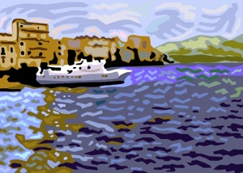
Reciting the steps in mitosis (which years later will be significantly harder to remember than the teacher's goofy joke: "mitosis are at the ends of my feetses"), or plugging and chugging through a problem set on the ideal gas laws does not sound particularly creative. Then again, memorizing the features that distinguish early and late impressionist paintings does not sound creative either.
Being a painter involves creativity; studying the paintings of others probably does not. Aye, there's the rub. Science classes focus on studying the results of the works of the great thinkers who came before, not on challenging one to think like a scientist.
Thinking like a scientist involves considerable creativity. With the rudimentary tools available in ancient times, how can one find the distance to the sun? What could possibly explain the reversing magnetic field lines in the rocks at the center of the Atlantic Ocean? Could the mechanism behind a puzzling finding in genetics be that genes can jump from one chromosome to another? These are all real problems in science, solved by men and women who could think outside the box.
If sculpting a figure from clay is creative, so is building a molecular machine from atoms. If painting a landscape is creative, so is figuring out how to use fluorescent labels to map the landscape of the brain. The creations of science can likewise be beautiful, more beautiful than some of the projects that pass (in the vein of the Emperor's New Clothes) as "art."
Just as it is easy to lose sight of the beauty and creativity of a Monet, Manet or Cézanne when one is focused on copying the mechanics of the brush strokes, it is easy to lose sight of the beauty and creativity in science when one is memorizing the electron transport chain in photosynthesis for later regurgitation on a test.
Scientists need to shout about the beauty and creativity of their work from the rooftops! Of course, this might embarrass their children. Still, it is possible to get the message across through your medium of choice while avoiding the kinfolk custodians of coolness. Perhaps a T-shirt is warranted, an actual T-shirt, not the kind the Emperor wore. Now that would be creative, but is it art or science?
Peeling Back the Layers
Towers are more foreboding than silos (cold comfort for the poor soul who tries to walk across that quicksand-like grain pile), but what about a tower full of silos? The Ivory Tower, as the research university has been unflatteringly dubbed, only sometimes has a tower and rarely is it ivory. Silos are omnipresent.
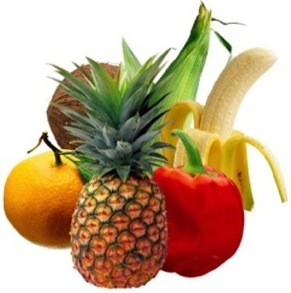Readers of this blog may label themselves scientists or non-scientists, academics or non-academics. The whole point of a label is to permit generalizations about a category, but most dichotomies tell us as much as separating fruits and vegetables. Which is more nutritious? Which tastes better? And what is up with fruits masquerading as vegetables? Tomato, we are wise to you.
Not all scientists are academics. Not all academics are scientists. Scientists typically do not self-identify as scientists. Academic scientists' big umbrella category (the one they would use to reply to someone at a cocktail party who asks, "What do you do?") would likely be "researcher." Probe and the researcher will name a discipline (physics). Probe a little deeper and the physicist will provide a subdiscipline (condensed matter physics), and because you seem genuinely interested, the condensed matter physicist will hone in on a research focus (our lab utilizes lasers to probe the structure of compounds with the potential to be magnetic superconductors). If you are still interested, your new friend is just getting started.
Your laser-wielding condensed matter physicist may collaborate with researchers in other fields, for example an inorganic chemist who uses knowledge of molecular properties to synthesize compounds with the goal of optimizing superconducting properties. Experts, however, are specialists by definition. A world-renowned researcher knows as much about most academic disciplines as a non-academic.
Therefore in communicating science, even with a scientist in another field, it is useful to peel back the layers of the fruit (or vegetable). Wait to delve into the details until you have established a sensible starting place. True, the good stuff may be a few layers down but, if you fail to be strategic about it, everyone's eyes may be watering before they realize that jicama is actually an onion.
Tapping the Tree of Inspiration
A naked Archimedes leaps from his bath and runs through the streets of Syracuse shouting, "Eureka! Eureka!" Generations of middle school students are introduced to this bit of lore while studying that a submerged object displaces its volume in water and a floating object displaces its weight in water. More puzzling to awkward adolescents than Archimedes' principle is his failure to wrap the family jewels in a towel before celebrating the insight that would reveal whether the king's crown was worth its weight in gold.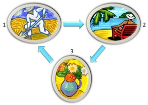
Nudes are more the bailiwick of artists, but insights are as precious to writers as they are to scientists. A sustained focus on a goal followed by a deliberate shift in focus, especially one that engages the body, can result in the solution to a problem or relief from writer's block. The writer needs to find the happy medium between letting the wild horses of the mind run free and reining them in. Perhaps a slower metaphor is more apt.
Step 1: Focus the machinery of the mind to cultivate the land and plant the seed.
Step 2: Provide time and appropriate conditions for germination and growth.
Step 3: Harvest what comes up before it drifts away like a tumbleweed in the wind.
Repeat as often as possible to avoid leaving fallow the fertile hills and valleys of the grey matter.
Golden Rules of Jargon
The first rule of science communication is "Eliminate jargon!" That would seem like a laudable goal, but what is jargon anyway? In a thesaurus, synonyms for jargon include: terminology, slang, lingo, argot, language and gobbledygook. What an odd list of synonyms. Terminology and slang could be antonyms. Language usually has a positive or neutral connotation; the connotation of gobbledygook is consistently negative. So is jargon like pornography—you know it when you see it?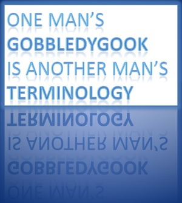
Jargon is the language spoken and understood by members of one field that may be incomprehensible to outsiders. It is not unique to scientists. Artists, plumbers, mechanics, interior designers, golfers and yogis all use jargon. To borrow a jargon example from education that was borrowed from anthropology, individuals who are enculturated into a particular community share a language. Shared language makes us feel part of a tribe, and that is a good feeling.
Scientists, of course, are not using jargon to feel good (okay, not just to feel good). Shared language makes it possible to discuss concepts succinctly, because things can be named instead of described. In addition, what outsiders lump together, insiders may need to split. A textile color chemist needs to know whether "shade of blue" refers to cobalt, cerulean, indigo, navy, periwinkle, sapphire, turquoise or...?
Here are five practical tips on jargon.
1. Identify language unique to your discipline. Although this is a no brainer, doing so is easier said than done. Practice communicating outside one's tribe reveals the raised eyebrows and blank stares that should sound the jargon alarm.
2. Identify false friends. False friends, not to be confused with insincere humans, are words that sound familiar but have different meanings. For example, "fitness" means one thing to an evolutionary biologist and another thing to a gym rat.
3. Eliminate the eliminatable. Details are important to those working within the same subdiscipline. Outsiders, including scientists in other fields, will gain more from an explanation that focuses on main concepts with minimal terminology.
4. Define what cannot be eliminated. Scientific terms essential to the meaning of the work can be defined, but this approach should be used extremely sparingly to avoid exceeding the working memory of the audience.
5. Develop an explanation toolkit. Reflect on both the underlying concepts of your work, as well as the subjective experience of carrying out the research. What images and analogies come to mind?